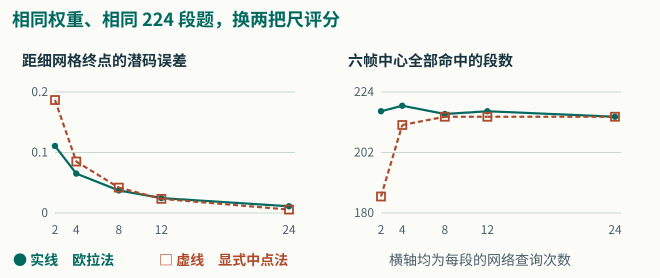

对照整条趋势

左图拿 192 个显式中点步算出的终点作数值参照。从 224×72 个标准化潜码差取平方、求平均后再开方，得到 RMSE。右图只统计六帧中心全中。请留意两幅图各自的纵轴刻度。
复算
解压包内进入 reproduce。读现有记录用 python3 solver_report.py ../flow-hint --budget 4。要从权重跑完整批评测，用已安装 PyTorch 的 Python 执行 python3 solver_lab.py --out replay/solver。